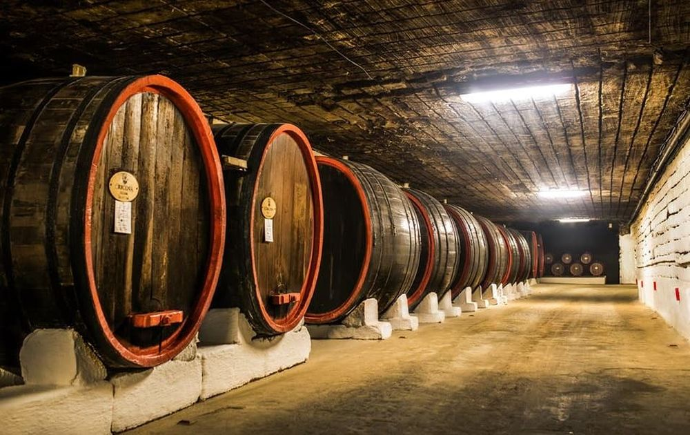

Descoperă Cricova - O aventură subterană în lumea vinului
Cricova este una dintre cele mai renumite crame din Republica Moldova, cu galerii subterane imense și vinuri deosebite:
-

Galerii subterane - Cufundă-te în mister
Cricova se remarcă prin galeriile subterane extinse, unde sunt depozitate și maturate vinurile.
-

Tururi de degustare - Călătorie în lumea vinului
Vizitatorii pot explora galeriile și degusta diverse soiuri de vinuri din Cricova.
-

Colecții de vinuri - Patrimoniu enologic
Cricova are o colecție impresionantă de vinuri, inclusiv ediții limitate și vinuri rare.
-

Evenimente speciale - Ambianță festivă
Locul găzduiește evenimente tematice, petreceri private și degustări exclusive.
-

Magazin de vinuri - Suveniruri și cadouri
Vizitatorii pot achiziționa vinuri Cricova pentru a duce cu ei o bucată din experiența unică.
Concluzii
Cricova oferă o incursiune subterană în universul vinului, lăsând vizitatorii fascinați de istoria și cultura viticolă a Moldovei.